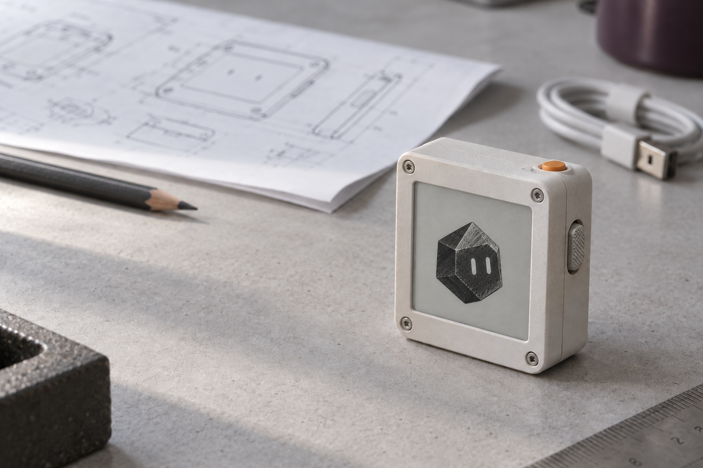
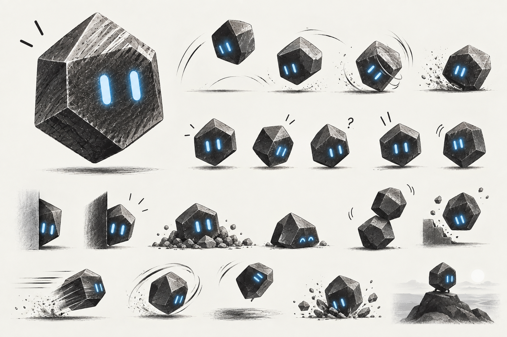
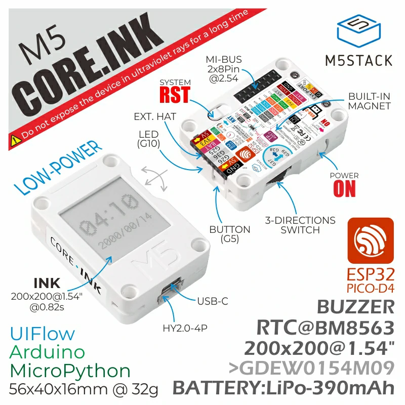

Quiet presence
The pager and the e-paper display suggest a device that waits well. Keep the screen calm. Interrupt for a reason.
A small face.
A long memory.
A job to do.

Give an agent a lasting place to work. Give it more computers when the job grows. Give the person a small, quiet way to see what matters.
Meet Marty. A physical companion on the desk. A persistent agent in the cloud. Temporary workers for the heavy work.
The computer can be elsewhere. The responsibility should stay close.
Source fact marks evidence from documentation or code. Design proposal marks our choices. Test target marks an outcome to prove. This is a design study; the integrated system is not built.
A pager. A dial. A drawer that keeps its contents. Useful objects explain themselves through use. Our companion should learn that trick.
The pager and the e-paper display suggest a device that waits well. Keep the screen calm. Interrupt for a reason.
The dial suggests a clear physical choice. A press should have a known effect. A person should not need courage to use a button.
The drawer suggests memory. The connected blocks suggest extra capacity. Keep what matters. Rent what works.
A dark, faceted body. Two blue eyes. Enough expression to be familiar. Enough restraint to leave you alone.

Marty takes his name from martensite, a structure that forms during the hardening of many steels.[12] The name gives him a direct link to Steel. His facets and blue eyes are character choices.
A tilt can mark work in progress. Raised eyes can mark a decision. A settled pose can mark completion. Always pair the pose with clear text. Marty has a job. He does not need feeding.
Use blue eyes and brief movement on a phone or computer. On CoreInk, use a black silhouette and white eyes. Keep each pose still between useful updates. Test legibility at the actual screen size.
Change Marty's expression when the recorded state changes. Show the last sync time beside him. A cheerful face cannot turn an uncertain result into a completed task.
The person leaves the desk. The agent keeps the promise. Later, a short message arrives: “The draft is ready. I need one decision.” A small event. A large change in the working day.
The category is taking shape. Persistent agents already have computers, memory, and ways to reach people. Each product makes a different choice about the relationship.
| Reference | What the documentation says | What we take from it |
|---|---|---|
| Grok BotA team of named agents | Bots coordinate and keep separate memories. One account computer supplies shared files, sessions, and credentials. Each bot gets its own screen.[1] | Choose explicitly what workers share. A new name does not create a new access boundary. |
| OpenAI DotsA persistent coordinator | A dot has a cloud computer and browser. It can wake later and delegate parallel tasks. The person can keep talking while work continues.[2] | Separate the ongoing relationship from each job. Keep the coordinator available while workers run. |
| Meta MuseA personal agent with enforced permissions | Muse uses a dedicated virtual machine. A separate Sentinel service controls connector actions and outgoing requests. Durable state sits outside the execution environment.[3] | Place permission enforcement outside the model's control. Bind each decision to an exact action. |
| InstinctPersonal context, familiar contact | Its site describes an assistant that uses a phone and computer. It connects to personal context and can call or text proactively. Technical detail is limited.[4] | Meet people where they communicate. Ask whether another screen earns its place. |
Steel could supply the persistent computer, storage, private network, and temporary capacity. A developer chooses the runtime and model. The physical companion demonstrates one possible experience.
Dots and Muse already offer personal names and avatars.[5] Our device must add clear status and convenient control. A face alone is pleasant. It is not yet a reason to manufacture anything.
Keep the agent's identity and records stable. Start temporary computers for work that needs more memory, isolation, or a separate browser.
The person returns to the same agent, with the same responsibilities.
A restart restores the records. A lost computer does not erase the job.
Start small. Add a worker when the task requires it. Record the cost.
Pi Durable is experimental. The Steel execution adapter, device protocol, permission service, and worker manager require implementation. Long-lived compute and a managed organization network remain proposed Steel capabilities in this report.
An approval is a stored record with a precise scope. It survives a disconnect. It expires. It cannot silently become permission for a different action.
The agent proposes an action. The service resolves its exact destination, content, cost, and effect.
Store the request identifier, action digest, expiry time, and policy result before sending an update.
Show a short summary on the device. Route long or sensitive decisions to the full review screen.
The authenticated device sends the request identifier and decision. The service checks freshness and scope.
Grant only the approved action. Use a stable operation identifier where the destination supports duplicate protection.
Store the outcome. After a crash, inspect the external result before repeating an action with an uncertain outcome.
Pi Durable records tool intent before execution. It reruns interrupted tools only when they are declared safe to replay. Other interrupted calls report an error.[6] The adapter must still handle external effects that completed before the result was stored.
E-paper holds an image without power. Always show the last sync time. Show an offline state when the powered device detects a lost connection. A cached “Allow” prompt cannot authorize a changed or expired request. The service checks the live record.
Read, plan, and prepare within the assigned scope. Request a decision when the action exceeds it. A person should approve the meaningful change, with the result ready to inspect.
A small screen imposes useful discipline. Say what is happening. Say what the person can do. Leave the rest in the report.

RAM means random-access memory. M5Stack lists no external RAM. It recommends a 15-second display refresh interval.[8]
Use CoreInk for the prototype. Espressif marks its chip as not recommended for new designs; select a current module for custom hardware.[13]
Use a small network client on this board. Keep the agent runtime and conversation in the cloud. Measure power use with real Wi-Fi traffic before making a battery claim.
The agent is waiting for a scheduled check. Rest is a valid state. The face does not ask for attention.
Interactive screen study. The buttons change this illustration only. This simplified Marty icon must be tested at native screen resolution.
Tamagotchip gives us an existing agent project and a physical approval concept. The inspected clone targets M5StickC PLUS2. Its host tests passed at commit a03d765.[9]
Reuse the interaction lessons and relevant hardware abstractions. CoreInk needs a separate display, input, power, and network-client implementation.
Use a static face between useful updates. Avoid care tasks, streaks, and guilt. A quiet device should not look abandoned.
Batch screen changes. Wake on a button or scheduled check. A sleeping Wi-Fi radio cannot receive an immediate remote update; measure the delay and battery tradeoff.
Hand one to an employee. Put one on the kitchen shelf. Let a family member carry one. Each Marty connects to a person, an agent, and a clear set of permissions.
A Quick Response (QR) code on the screen starts setup. The phone handles sign-in, network setup, and agent selection. A button press on Marty confirms physical access.
The code opens a short-lived setup session. It contains no Wi-Fi password, agent credential, or lasting account access. Scan alone does not complete ownership transfer.
A person can have several Martys. Several devices can show the same agent. A device can also show a permitted shared task. Start with one active agent view per device.
Keep the device record separate from the person and the agent. Replacing a device should preserve the agent's memory. Change assignments from the phone or management page.
Hold the setup button. Create a fresh setup session and show its QR code. An unconnected device can begin this exchange locally.
Open the companion app. Sign in to your account. Choose your household or team space. Match the device shown on both screens.
Verify the device through an authenticated, encrypted setup channel. Press Marty's button to confirm the claim. Expire the session after use or timeout.
Send Wi-Fi settings through the protected setup channel, or select the phone relay. The phone needs internet access to register the device.
Name the device. Select an agent you can access. Choose what it can show and which decisions it can accept. Shared devices default to status only.
Show the assigned agent, connection mode, and last sync. Send a test update. Record the assignment and issue a revocable device credential.
Use direct Wi-Fi at a desk or home. After setup, the phone can leave. CoreInk supports 2.4 GHz Wi-Fi.[8] Begin with a known network. Test workplace network policies before wider use.
The ESP32-PICO-D4 also supports Bluetooth LE.[13] Espressif provides Wi-Fi setup over BLE with selectable authentication and encryption.[14]
Use a phone companion to relay small updates and decisions. This requires firmware and a phone app. Bluetooth hardware support alone does not supply the relay.
Both iOS and Android limit background app behavior.[15] Test screen lock, app termination, lost range, and reconnection. Keep the last sync visible when the phone cannot relay.
Create separate household and team spaces. Invite people, assign devices, and grant access to agents. An administrator can manage hardware without automatically receiving private conversation access.
| Device | Space & assignment | Allowed interaction |
|---|---|---|
| Alex's desk Marty | Team · Alex · project agent | Private status and decisions within Alex's role. |
| Workshop Marty | Team · shared · build agent | Build status only. Named people review consequential actions on their phones. |
| Kitchen Marty | Household · shared · home agent | Shared reminders and agreed household tasks. Private messages stay on personal devices. |
| Sam's pocket Marty | Household · Sam · personal agent | Personal updates through Sam's phone. No access to other members' agents without a grant. |
Example assignments. A shared device still needs a named person for an approval that requires personal authority.
Track device name, assigned person, agent, firmware version, battery, and last sync. Let the owner rename, locate in the inventory, revoke, or return a device.
Revoke old credentials before reassignment. Wipe local records before handoff. An offline e-paper screen can retain old text; show brief, non-sensitive summaries by default.
Five Martys can be five views of one agent. Five independent agents need separate state and compute allowances. Hardware, agent capacity, and worker usage should have separate prices.
A screen should not quietly create another cloud computer. Record the resource change when a person creates an agent.
After the single-device loop works, issue three devices to a team and three to a household in a controlled pilot. Test self-service QR pairing, Wi-Fi setup, phone relay, lost-device revocation, and reassignment. Prove that a decision on one device resolves the same request on every other device. Measure phone background behavior and radio memory use before committing to a release date.
Start with one responsibility: prepare a weekly project brief from approved sources. Use one temporary worker. Ask before sending the finished brief.
Run Pi Durable with persistent storage. Add a basic service endpoint and a phone-sized review page.
Exit test: restart during a task. Restore the task and its visible state.
Implement the Steel adapter. Store worker records. Add expiry, cost limits, result collection, and cleanup.
Exit test: lose a connection during creation. Recover without an untracked worker.
Enroll one CoreInk with preconfigured Wi-Fi. Show current state and last sync. Add the scoped approval flow and offline behavior.
Exit test: duplicate and stale button responses never authorize a new action.
Run five internal pilots. Track useful completions, interruptions, blocked tasks, battery use, and spend.
Exit test: a person completes the full handoff without the engineer acting as operator.
Planning estimate: 10–14 working days for a focused engineering pair and one device with preconfigured Wi-Fi. Self-service pairing, the phone relay, and group management follow as a separate milestone. Hardware access and Steel capabilities can change the sequence. This is not a delivery commitment.
The pilot should establish continuity, useful control, and a believable cost model. These are acceptance targets, not measured results.
| Question | Proposed target | Evidence to collect |
|---|---|---|
| Does it remember the work? | Recover all task records in 20 injected restarts. Resolve uncertain external effects explicitly. | Compare committed state, worker inventory, and destination receipts. |
| Does approval stay precise? | Zero executions from expired, changed, denied, or duplicate approval requests in the test set. | Exercise each case before and after a restart. |
| Can you trust the screen? | Show the last sync on every state. Reflect new state within 30 seconds while connected and polling. | Record service and display timestamps. Measure wake delay separately. |
| Does the hardware last? | Reach at least 24 hours in the defined pilot workload. | Measure three devices. Record wake interval, signal strength, and update count. |
| Does it finish useful work? | At least 8 of 10 weekly briefs meet the agreed review checklist. | Have a person review completeness, source accuracy, and the send decision. |
| Does extra capacity return? | Track every created worker. Release idle workers within two minutes of lease expiry. | Compare the job ledger with the provider inventory and bill. |
| Does it reduce interruptions? | At least 4 of 5 pilot users choose to keep the device for another week. | Ask why. Count useful and unnecessary updates separately. |
A base subscription could include one persistent agent computer, storage, and private networking. Additional computers and browsers add metered usage. The person should see the limit before work starts.
Try one virtual processor and 1 GB of memory for the resident service. Treat this as a profiling hypothesis. Move browsers and builds to temporary workers. Measure idle memory, recovery time, and peak load.
Offer additional persistent agents, more concurrent workers, and higher browser usage as separate allowances. Reserve budget before dispatch. When a limit is reached, save progress and ask for a decision.
Illustrative costs in US dollars over 30 days. These inputs are hypothetical and do not quote Steel pricing.
Assumed rates: resident service and storage $6/month; workers $0.08/hour; browsers $0.04/hour. Model cost is a separate input.
Illustrative monthly operating cost
Before support, network transfer, tax, hardware, and margin.
The slider shows sensitivity to usage. It does not establish a retail price or a viable margin.
A cheap idle computer can still coordinate expensive work. Report cost per completed responsibility, including failed attempts. Set worker limits and model limits independently.
The drawing is tidy. Reality has cables. Resolve these questions before widening the pilot.
Verify computer lifetime, persistent disk behavior, replacement, snapshots, and recovery. Test private connectivity and stable service names. If the resident service cannot run there yet, place it on a persistent host and keep Steel as the worker provider.
A request can succeed while its response is lost. Save an operation identifier and inspect the destination before retrying. If the destination has no reliable receipt, mark the result uncertain and ask the person to inspect it.
Measure connected idle power, timed polling, button wake, and full wake. Test the actual access point. Select the wake policy from observed energy use and tolerated update delay.
Compare the physical companion with the same service on a phone. Ask people to complete the same task in both conditions. Keep the hardware if it makes state easier to understand or decisions easier to complete.
Export conversation records, settings, and selected artifacts. Make active workers visible. Revoke device access independently. Verify that stopping an agent also handles its schedules and outstanding jobs.
Remember the work. Show its state. Ask for the right decision. Return the spare computers when the job is done.
The first demonstration: assign a task, put the device to sleep, restart the service, then wake the device. It should show the correct result or the same pending decision. No missing job. No mystery bill. Just a small face, still on duty.
Research checked on 03 October 2026. Product documentation describes vendor claims. We have not performed a comparative reliability test.
Persistent account computer, agent memory, collaboration, and access. See also computer and app sharing and private network setup. Networking is customer-operated in the reviewed guide.
Persistent agent, cloud computer, and contact methods. Tasks and memory describes background agents, waking, and delegation.
Runtime isolation, Sentinel, credentials, approvals, and durable state. A confidential virtual machine is described as planned, not generally available. Product announcement.
Personal context, calls, texts, and device use. Public material reviewed did not establish storage, recovery, pricing, or availability guarantees.
Names, avatars, background work, and useful interruptions. Dots personalization is covered in source 2.
Reviewed package README, specification, environment example, and tool recovery implementation. Experimental API. Safe replay requires a truthful tool contract. Persistence still depends on the selected storage and its recovery guarantees.
Only the introduction and initial setup text loaded during research. It describes Linux computers, commands, file transfer, and deletion. The proposed persistent shape, organization network, and subscription are design requests, not verified product features.
Display, memory, controls, battery, and refresh guidance. Product photograph from M5Stack's documentation. The proposed enclosure in Figure A is separate.
Local clone inspected at commit a03d765. Host suite passed with make -C test. Firmware build and on-device behavior were not verified. The README's stated milestone trails the implementation.
Figures A and B were generated for this report. System diagram, screen study, cost model, and prototype targets are original proposals. Fonts: Chivo and Source Serif 4, distributed through Google Fonts.
The project founder supplied the character sheet and selected the name Steel Marty, inspired by martensite. The report uses the supplied artwork without alteration.
H. K. D. H. Bhadeshia’s materials explain martensitic transformations and hardening. This is the naming reference. Marty’s silhouette is an artistic interpretation.
Espressif specifies Wi-Fi and Bluetooth LE support. Its datasheet marks ESP32-PICO-D4 as not recommended for new designs. CoreInk remains the proposed prototype board.
Wi-Fi setup over BLE or a temporary access point. Authentication, encryption, and proof of possession are available. The implementation must select and configure them. Persistent phone relay is separate proposed work.
Connection lifecycle and app restrictions. Also see Apple’s background Bluetooth guide. Test current supported phone versions; hardware capability does not guarantee continuous relay.
Writing follows a Simplified Technical English direction, with short sentences, stable terms, and limited dry humor. This is not a certified ASD-STE100 document. All sample states, schedules, rates, and outcomes are illustrative. No services are contacted by the interactive studies.
Download the complete report as one HTML file · Includes images, fonts, and interactive studies. Download the PDF.